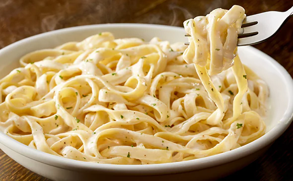

Alfredo Pasta Steps Made Easy

Description
This dish incorporates components of creamy and savory ingredients to create a filling and delicious dinner. The alfredo
pasta recipe utilizes very few ingredients and minimal steps to complete. For the sauce base, heavy cream or half/half are suitable. Anything lighter in
fat content might stray too far from the desired consistency and taste. Chicken or shrimp can be added to this dish to
include a textural component and additional protein source. This recipe allows the freedom to choose your
favorite pasta. It's important to keep in mind the different cook times for the different types of pasta.
Ingredients
- Garlic
- Parmesan cheese (1 cup)
- Pasta (chef's choice)
- Butter (1/2 stick)
- Heavy cream or half/half (2 cups)
- (optional) Chicken or shrimp
Steps
- Start boiling water that has been seasoned with salt
- When water begins to boil add desired pasta and cook until rougly 85% complete
- Finely dice garlic and set aside
- Start another pan on medium heat and add butter with garlic
- Sautee garlic until pan has strong aroma (do not burn garlic)
- Add heavy cream to pan and season with salt
- Let sauce come to a boil then reduce heat
- Drain pasta and add directly to sauce pan
- Add parmesan cheese to pasta and sauce combo
- Continue to stir pasta until consistency begins to thicken
- Add additional parmesan cheese to pasta if sauce is not thick enough for your preference
- Let cool and enjoy!